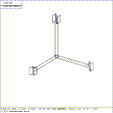
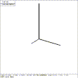

 Figure (axis-3525): The Model Axes Viewed from 35,25
MGED does not display a set of XYZ co-ordinate axes on the screen. When you are in the 35,25 (isometric) viewing state the axes are positioned as in Figure (axis-3525) . This database can be found in cad/db/axis.g.
 Figure (rmit-3525): Example Axes Viewed form 35,25
If you would like a set of coordinate axes to assist in model building, the easiest thing to do is to construct three axes using "rcc" cylinder primitives via the "in" command;
mged> in x rcc 0 0 0 50 0 0 1
mged> in y rcc 0 0 0 0 100 0 1
mged> in z rcc 0 0 0 0 0 150 1
mged>
with the short leg as the "x" axis, next longer leg the "y" axis and longest leg the "z" axis, as in Figure (rmit-3525) . Now, at any stage through construction of the model, the 'solid' or 'object illuminate' mode can be used to identify which axis cylinder is going where; they will have the solid names of "x", "y", and "z". The name of the solid will also be displayed in the top left hand corner of the graphics window and at the bottom of this window.
Before going on to create a model, construct the three axes cylinders with the "in" commands mentioned above. Select the "button menu" in the upper left corner of the graphics window to enable the button menu, and select 35, 25 from this menu. Your axis will be displayed as shown in Figure (rmit-3525) .
{kind=link}
{kind=link}